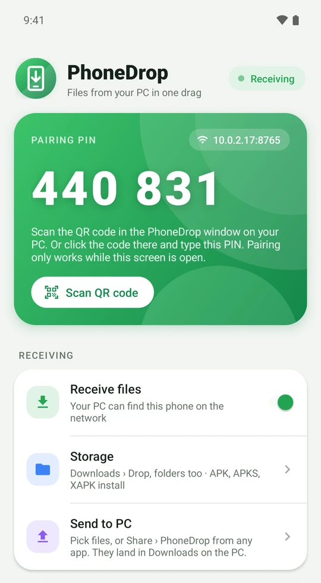
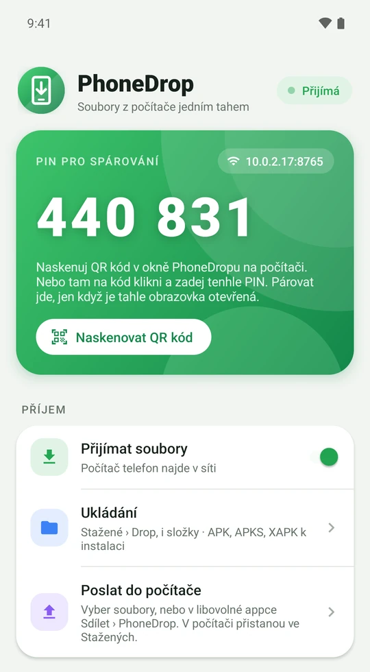
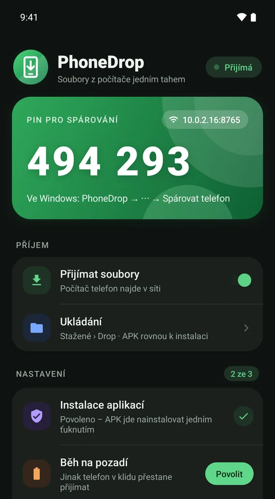
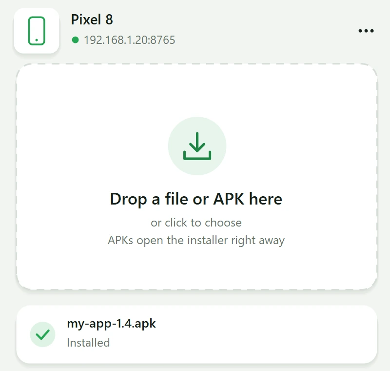
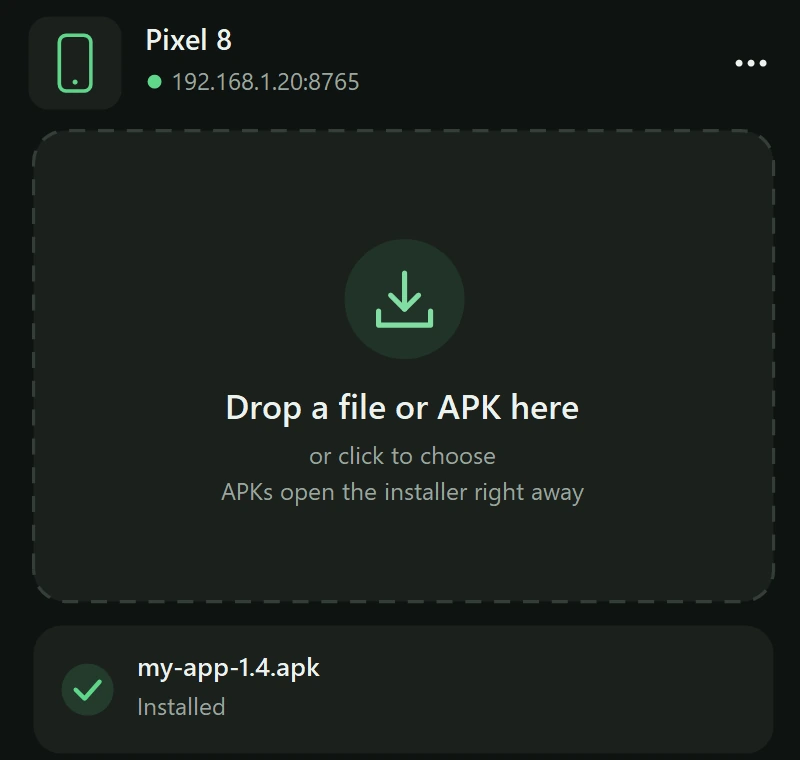
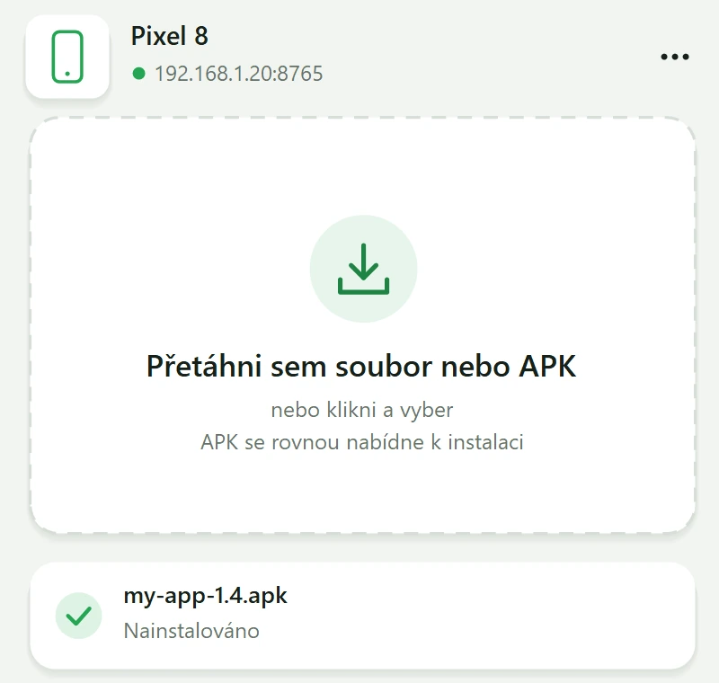
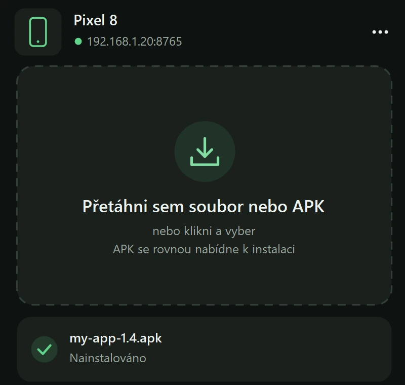

Drag a file on Windows.
It lands on your phone.
Přetáhni soubor ve Windows.
A je v telefonu.
Drop it into a small window and it's on your Android phone. An APK opens the installer right away, one tap on Install and you're done. Everything else goes to Downloads. No cable, no adb, no wireless debugging. Pusť ho do malého okénka a je v telefonu s Androidem. APK rovnou otevře instalaci, stačí ťuknout na Instalovat. Všechno ostatní se uloží do Stažených. Bez kabelu, bez adb, bez bezdrátového ladění.
The real apps: drop on Windows, one tap on the phone. Skutečné aplikace: pustit ve Windows, jedno ťuknutí v telefonu.
Set up once. Then just drag.Jednou nastavit. Pak jen táhnout.
The phone listens on your home Wi-Fi, the PC finds it by itself. Pairing with a PIN makes sure only your computer can send. Telefon poslouchá v domácí Wi-Fi a počítač ho najde sám. Párování PINem zajistí, že posílat může jen tvůj počítač.
-
1
Install both appsNainstaluj obě aplikace
PhoneDrop.apk on the phone, PhoneDrop.exe on Windows. The phone app shows its address and a six-digit PIN.PhoneDrop.apk do telefonu, PhoneDrop.exe do Windows. Aplikace v telefonu ukáže svou adresu a šestimístný PIN.
-
2
Pair with the PINSpáruj PINem
On Windows, pick your phone from the list and type the PIN. Done once, remembered for good.Ve Windows vyber telefon ze seznamu a opiš PIN. Stačí jednou, zůstane zapamatovaný.
-
3
Drag files inPřetahuj soubory
Into the window, or right-click → Send to › Phone. APKs ask for one tap, other files just arrive.Do okénka, nebo pravým tlačítkem → Odeslat do › Telefon. APK chce jedno ťuknutí, ostatní soubory prostě dorazí.







Small app, no fussMalá aplikace, žádné starosti
APK in one tapAPK jedním ťuknutím
APK, and split APKs as .apks or .xapk too. Uses Android's own installer, so updates keep your data, and the PC shows how it went.APK i split APK jako .apks nebo .xapk. Používá instalátor Androidu, takže aktualizace zachová data, a počítač ukáže, jak to dopadlo.
Files and foldersSoubory i složky
Drop a pile of photos or a whole folder: it lands in Downloads › Drop with its subfolders. The phone checks free space before the first byte.Pusť hromadu fotek nebo celou složku: přistane ve Stažené › Drop i s podsložkami. Telefon předem ověří, jestli se vejde.
Finds the phoneTelefon si najde
The phone announces itself on the network (mDNS). New IP after a router restart? PhoneDrop finds it again.Telefon se v síti ohlásí sám (mDNS). Nová IP po restartu routeru? PhoneDrop ho najde znovu.
Send to › PhoneOdeslat do › Telefon
Optional entry in the Explorer right-click menu. Lives in the notification area, so it's always one drag away.Volitelná položka v pravém tlačítku Průzkumníku. Sedí v oznamovací oblasti, takže je vždy na jedno přetažení.
And back to the PCA zpátky do počítače
Share › PhoneDrop in any app on the phone and it lands in Downloads on the PC. All on your Wi-Fi: no account, no cloud.V libovolné appce v telefonu Sdílet › PhoneDrop a soubor přistane v počítači ve Stažených. Všechno přes tvou Wi-Fi, bez účtu a cloudu.
Updates itselfAktualizuje se sám
Both apps notice a new release and install it after a checksum check. Light and dark theme, English and Czech.Obě aplikace si všimnou nové verze a po ověření kontrolního součtu ji nainstalují. Světlý i tmavý vzhled, čeština i angličtina.
Scriptable tooI pro skripty
Build an app, push it to the phone and wait until it's installed, from one line. Handy right after gradlew assembleRelease.
Sestav aplikaci, pošli ji do telefonu a počkej na instalaci, jedním řádkem. Hodí se hned po gradlew assembleRelease.
# phones on the network
> PhoneDrop --discover
PhoneDrop Pixel 8 192.168.1.20:8765
# send and wait for the install
> PhoneDrop --send app-release.apk
✓ app-release.apk: InstalledGet PhoneDropStáhnout PhoneDrop
Free and open source under the MIT license. Latest version: v1.6.1. Zdarma a open source pod licencí MIT. Nejnovější verze: v1.6.1.
The Windows exe has .NET built in. Already have the .NET 10 Desktop Runtime? Grab the small exe (0.4 MB) instead.
The Mac app isn't notarized by Apple: the first time, right-click PhoneDrop in Applications › Open.
Every release is built from the public code by GitHub Actions. All releases
Exe pro Windows má .NET v sobě. Máš už .NET 10 Desktop Runtime? Stáhni si raději malé exe (0,4 MB).
Aplikace pro Mac není ověřená u Applu: poprvé ji otevři pravým tlačítkem v Aplikacích › Otevřít.
Každé vydání sestavuje z veřejného kódu GitHub Actions. Všechna vydání
Found a bug? Got an idea?Našel jsi chybu? Máš nápad?
Write it here, or straight from the app (⋯ menu on Windows, Feedback on the phone). Every message reaches the author, no account needed. Napiš ji sem, nebo rovnou z aplikace (menu ⋯ ve Windows, Zpětná vazba v telefonu). Každá zpráva dorazí autorovi, bez registrace.
Support PhoneDropPodpoř PhoneDrop
PhoneDrop is free and will stay free, with no ads and no "pro" version. If it saves you time, a small donation helps keep it going. PhoneDrop je zdarma a zdarma zůstane, bez reklam a bez „pro“ verze. Pokud ti šetří čas, malý dar pomůže v dalším vývoji.
Solana SOL · USDC
Scan the code in Phantom, Solflare or another wallet, or copy the address. Naskenuj kód v Phantomu, Solflare nebo jiné peněžence, nebo zkopíruj adresu.
J7vmQqiFe6t3RSX9m8qCTFkxe6xDRzbPy5nMaeGNV7bL
Please double-check the address after pasting it. Only send on the Solana network. Po vložení adresu prosím zkontroluj. Posílej jen přes síť Solana.
Card or PayPalKartou nebo přes PayPal Ko-fi
No crypto wallet? Buy me a coffee on Ko-fi, one-off or monthly. No account needed. Nemáš kryptopeněženku? Kup mi kafe na Ko-fi, jednorázově nebo měsíčně. Účet není potřeba.
FAQ
Why do I still have to tap Install?Proč musím pořád ťuknout na Instalovat?
Android doesn't let an ordinary app install other apps silently, only with root or ADB. PhoneDrop hands the APK straight to the system installer, so one tap is the minimum Android allows.Android běžné aplikaci nedovolí instalovat jiné aplikace potichu, to jde jen s rootem nebo přes ADB. PhoneDrop předá APK rovnou systémovému instalátoru, takže jedno ťuknutí je minimum, které Android dovolí.
Google Play Protect wants to scan the appGoogle Play Protect chce aplikaci skenovat
For apps it hasn't seen before, Play Protect offers a scan: choose More details → Install without scanning. For a new developer it may even say App blocked to protect your device; then More details → Install anyway. The first time, Android also asks you to allow "Install unknown apps" for PhoneDrop.U aplikací, které ještě nezná, nabídne Play Protect sken: zvol Další podrobnosti → Instalovat bez skenování. U nového vývojáře může dokonce napsat Aplikace byla zablokována; pak Další podrobnosti → Přesto nainstalovat. Poprvé se Android zeptá i na povolení „Instalovat neznámé aplikace“ pro PhoneDrop.
Does it work outside my home network?Funguje to i mimo domácí síť?
Not yet. The PC and the phone have to be on the same network (a VPN like Tailscale works if you type the phone's address). A relay for the road is planned.Zatím ne. Počítač a telefon musí být ve stejné síti (funguje i VPN jako Tailscale, když zadáš adresu telefonu). Relay pro cesty je v plánu.
Is it safe?Je to bezpečné?
The phone only accepts files from computers paired with its PIN, and pairing only works while the app is open on the phone; each computer gets its own secret token. The connection itself isn't encrypted, which is fine on your home Wi-Fi but not on a public one. You can unpair all computers in the phone app any time.Telefon přijímá soubory jen od počítačů spárovaných jeho PINem a párovat jde, jen když je aplikace v telefonu otevřená; každý počítač dostane vlastní tajný token. Samotné spojení šifrované není, což v domácí Wi-Fi nevadí, na veřejné ano. Všechna párování zrušíš v aplikaci v telefonu kdykoli.
Windows says the publisher is unknownWindows hlásí neznámého vydavatele
The app isn't code-signed (certificates are expensive for a free project). Click More info → Run anyway.Aplikace není digitálně podepsaná (certifikát je pro bezplatný projekt drahý). Klikni na Další informace → Přesto spustit.